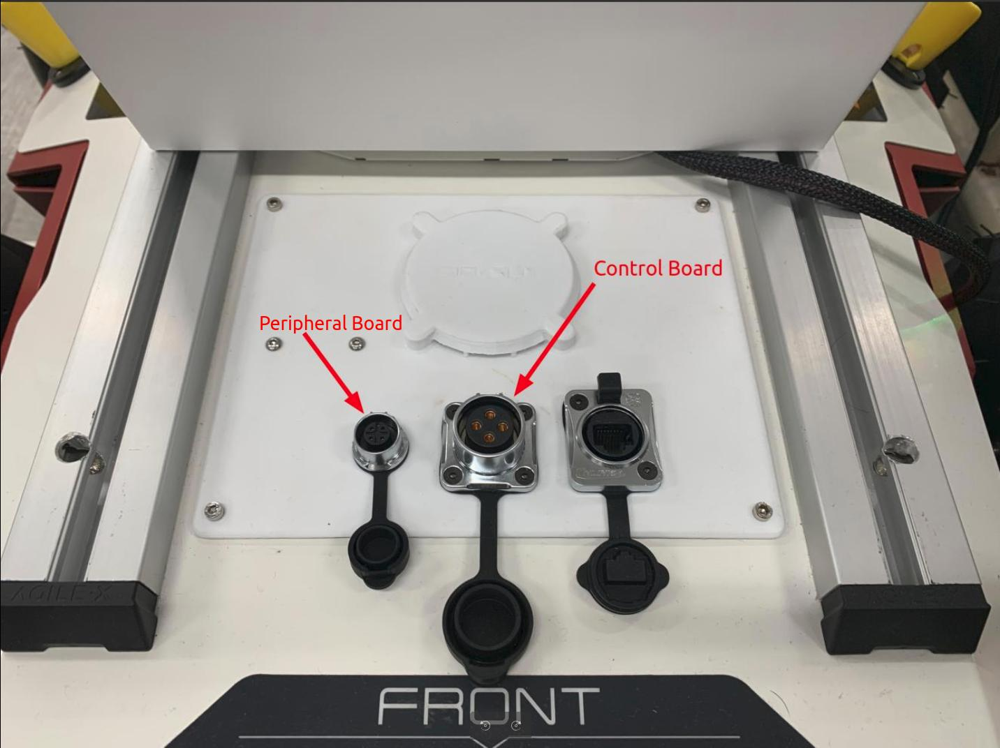

Scout (>V2.5) Robot
To upgrade the firmware, please ensure you have the following items
Laptop running on Ubuntu 18.04/20.04
USB to CAN + Power cables for Peripheral and Control Board
Signed binary image from Weston Robot
Weston Robot Firmware Update Manager executable from Weston Robot
{kind=link}

Middle aviation connector for Control Board. Left aviation connector for Peripheral Board
Connect powered on robot
Setup CAN connection for both/either boards
$ sudo modprobe gs_usb
# Replace can<X> e.g. can0
$ sudo ip link set up can<X> type can bitrate 1000000
$ sudo ip link set can<X> txqueuelen 10000
Launch Weston Robot Firmware Update Manager
(you may need to make the file executable first using chmod)
$ ./wr_firmware_manager
Verify the boards are connected
Select boards via drop-down menu at “Board Selection”
Click “Check”
The hardware and software versions are displayed, otherwise error will be displayed
Upgrade the firmware
Select boards via drop-down menu at “Board Selection”
Browse and select binary file to be flashed
Click “Update”
- Wait for for update to complete, robot will restart once flashing completes
Robot may beep during this time, this is normal behaviour
The “Confirm” action should be executed by default upon restarting, if it fails, restart the robot and click “Confirm”